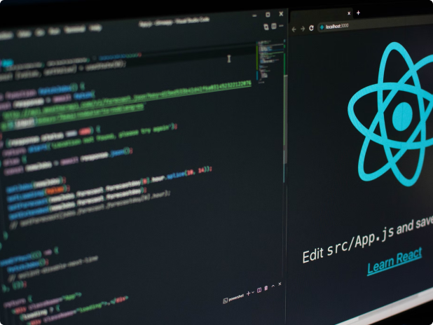

October 14, 2024
My new journey as a boot-camp student.
After several months of learning in the Frontend Developer Career
Path, I've made the big jump over to the Boot-camp to get expert
code reviews of my Solo Projects projects and meet like-minded
peers.
How I stay committed to learning
I like to think of myself as a lifelong learner. I used to spend hours
and hours learning, then try to create simple projects using what I
learned or work new techniques into existing projects.
While that was fun, I felt like it would be helpful to share what I
was learning and most things about my journey with the world.
How I got started
I started simple and gradually grew my learning journal site. I would
take notes about what I was learning. After each learning session, I'd
use my notes to not only reflect on what I learned but also write
short summaries of what I learned using my own words.
That helped me grok what I was learning, and I realized that posting
my learning summaries was also helping others learn and stay
motivated.

October 14, 2024
Blog one
I'm excited to start a new learning journey as a Scrimba Bootcamp
student! After several months of learning in the Frontend Developer
Career Path.

October 14, 2024
Blog two
I'm excited to start a new learning journey as a Scrimba Bootcamp
student! After several months of learning in the Frontend Developer
Career Path.

October 14, 2024
Blog three
I'm excited to start a new learning journey as a Scrimba Bootcamp
student! After several months of learning in the Frontend Developer
Career Path.